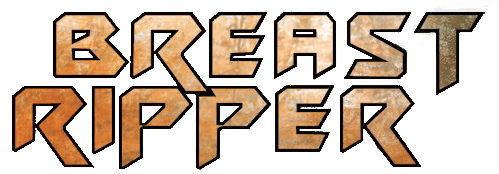
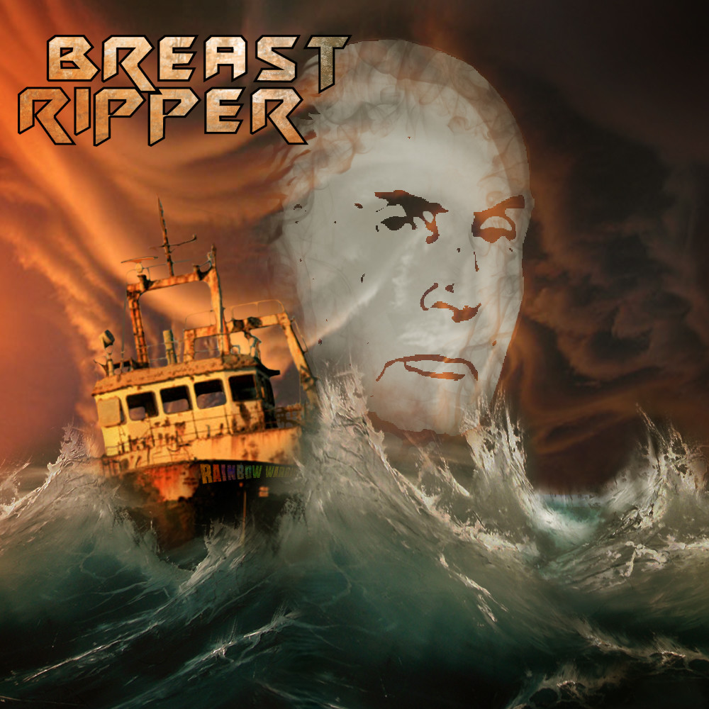

Technologies
Photoshop
Context
Pour la sortie de leur premier EP intitulé Rainbow Warrior, le groupe Breast Ripper m'ont contacté afin de réaliser l'artwork de leur pochette
Résumé
Breast Ripper est un groupe de heavy métal de Blois. Ils souhaitaient un artwork illustrant leur single Rainbow Warrior qui est aussi le titre de leur EP. C'est une référence directe à l'affaire du sabotage du navire de Greenpeace qui a eu lieu en 1985.
Technologies |
Photoshop |
Context |
Pour la sortie de leur premier EP intitulé Rainbow Warrior, le groupe Breast Ripper m'ont contacté afin de réaliser l'artwork de leur pochette |
Résumé |
Breast Ripper est un groupe de heavy métal de Blois. Ils souhaitaient un artwork illustrant leur single Rainbow Warrior qui est aussi le titre de leur EP. C'est une référence directe à l'affaire du sabotage du navire de Greenpeace qui a eu lieu en 1985. |
